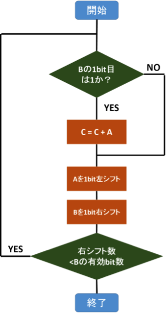
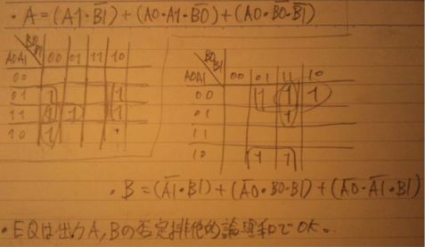
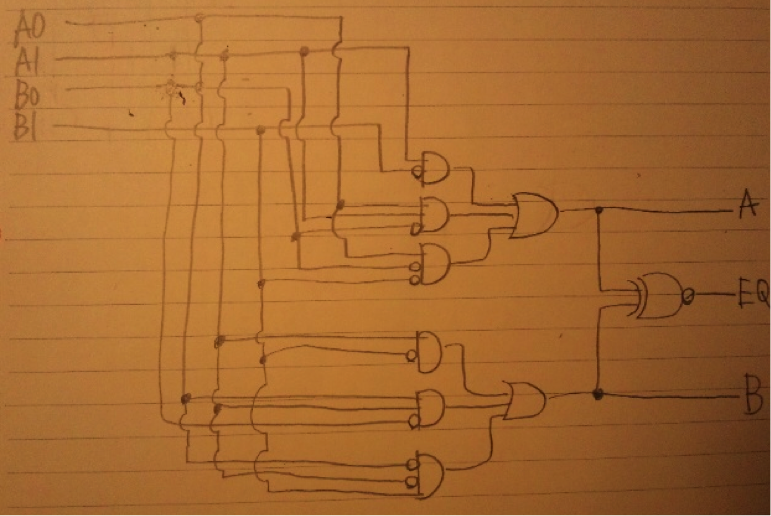
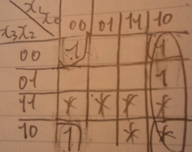
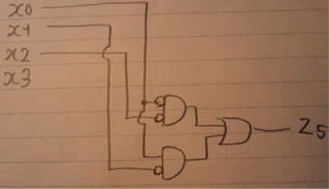

最も単純な力任せの文字列探索アルゴリズムである。1文字ずつtextとpatternの先頭文字を比較し、一致したらtextの一致場所の次の文字と、patternの次の文字を比較し、これをpatternの最後の文字まで繰り返す。全部一致したらwhile文を抜け出し、一致箇所の添字を返す。途中で不一致になった場合は、最初に一致した場所の次の文字から同様の探索を行う。Textの最後の文字まで不一致だった場合には-1を返す。
以上より、最悪の場合はn*(m-1)回の文字の比較が必要なので、O(n*m)。
問題文では述べていないが、KMPアルゴリズムである。
| パターン中の文字 | A | B | C | A | B | D |
| パターンをずらす文字数 | 1 | 1 | 2 | 3 | 3 | 3 |
while (text[i] != '\0' && pattern[j] != '\0') {
if (text[i] == pattern[j]) {
i++;
j++;
} else {
i = i - j + skip[j]; //変更箇所
j = 0;
}
}
スキップ表を使うとtextの文字を指すポインタが途中で不一致になったとしても戻ることは無いので、textの文字数分、つまりnに比例する比較をすることが分かる。スキップ表を作るための計算量を考えないとすれば、O(n)となる。
命令のアドレス部に入っている値がそのまま有効アドレスとなる方式。名の通り直接アドレスを指す。
アドレス部で指定したアドレスがデータではなく、目的のデータのアドレスが入っているアドレスを指す方式。名の通り他のアドレスを指定することで、間接的に目的のデータを指す方式。
アドレス部の値にプログラムカウンタを加算した結果のアドレスを指す方式。現PCからの相対的な位置を示す方式。
アドレス部の値にインデックスレジスタの値を加算した結果のアドレスを指す方式。一般的にはインデックスアドレスとして汎用レジスタが使われている。
実行プログラムの先頭アドレスをベースレジスタに設定し、アドレス部には先頭を０番としたときのアドレスを入れることで、プログラムの先頭からの相対的な位置を指す方式。

一般的なメモリがアドレスを指定すると、そのアドレスに格納されたデータが返ってくるのに対して、連想メモリでは指定されたデータワードから、メモリ全体からそのワードを検索して探しだす方式。発見すれば、その位置のアドレスを返す。
セットアソシアティブとフルアソシアティブの、対応するセット検索に利用されている。
ページ0~9の中では、ページ4が参照されてから最も長い時間参照されていない。
よってページ４。
ページの添字のキュー構造を使ってLRUを実現することが可能。参照されたら行列中にあれば削除し、新たにエンキューする。無ければ新たにエンキューする。列中では先頭にあるものが最も参照されてから長くアクセスされてないページの添字であるため、デキュー対象のページの添字が置換え対象となる。
今後参照されるまで最も長いページを置換え対象にするアルゴリズムが、ミスの頻度を最小にする方法である。しかし実装には未来のページ参照情報が必要であり、予想することは非常に困難であるため、空間的局所性、時間的局所などの性質を生かした近似的なアルゴリズムが使われている。
・ライトスルー
キャッシュ書き込み時に対応するメモリ上のデータにも同時に書き込む方式。書き込みの度にメモリアクセスが必要になるが、実装は容易かつシンプルで、一貫性は常に保たれる。
・ライトバック方式
キャッシュミス時に対応するメモリ上のデータに書き込む方式。キャッシュヒット時は読み書き共にメモリアクセスの必要が無く高速だが、ミス時は追い出し処理が加わるためライトスルーよりも時間が掛かる。また、ハードが複雑になる。
大規模なTCP/IPネットワークにおいて、各組織が保有、運用する自律したネットワークのこと。インターネットは複数のASを相互に接続した形態となる。
ASはAS番号によって識別される。
AS内経路制御（IGP：Interior Gateway Protocol）として代表的なものとして、RIPとSPOFが挙げられる。
・RIP
ルータの経由数（ホップ）がより少ない経路情報が最適経路として使用。最大メトリックが僅か15なので、大規模ネットワークには向いておらず、小規模ネットワークで使用されている。
・SPOF
最大メトリックの制限が無く、帯域幅に応じたコストの設定が可能。大規模ネットワークに向いている。
AS間経路制御（EGP : Exterior Gateway Protocol ）
BGP（Border Gateway Protocol）
AS間の経路情報の交換を行うための規約の一種で、現在の主流。AS番号を基に経路制御を行う。自分の管理するネットワークのアドレスをBGPで広告し、他のネットワークにそのアドレスへのルートを知らせるのが一般的である。
BGPの脆弱性。自分のネットワークアドレスAを他のプロバイダー等Bに広告されてしまった場合、今後クライアントがAにアクセスしたくてもBにアクセスされてしまい、ネットワークAはインターネットから孤立する。この状態をBGPハイジャック、またはprefix hijackingと呼ぶ。
プロバイダー（ISP）間の通信は、送信側に近い接続点を通るようなルーティング方法。
例えばX→Yの通信において、ISP1からISP2への通信は、Xにより近いA→Cの接続を利用。逆にY→XならD→Bを利用。
他ISP宛の通信は、出来るだけ早くそのISPに渡してしまうというルーティング方法。
ゆでたてのじゃがいも(ホットポテト)は手で持つと熱いので、すぐに他人に渡してしまう、ということからこの名前がついたらしい。
| A0 | A1 | B0 | B1 | A | B | EQ |
| 0 | 0 | 0 | 0 | 0 | 0 | 1 |
| 0 | 0 | 0 | 1 | 0 | 1 | 0 |
| 0 | 0 | 1 | 0 | 0 | 1 | 0 |
| 0 | 0 | 1 | 1 | 0 | 1 | 0 |
| 0 | 1 | 0 | 0 | 1 | 0 | 0 |
| 0 | 1 | 0 | 1 | 0 | 0 | 1 |
| 0 | 1 | 1 | 0 | 1 | 0 | 0 |
| 0 | 1 | 1 | 1 | 0 | 1 | 0 |
| 1 | 0 | 0 | 0 | 1 | 0 | 0 |
| 1 | 0 | 0 | 1 | 0 | 1 | 0 |
| 1 | 0 | 1 | 0 | 0 | 0 | 1 |
| 1 | 0 | 1 | 1 | 0 | 1 | 0 |
| 1 | 1 | 0 | 0 | 1 | 0 | 0 |
| 1 | 1 | 0 | 1 | 1 | 0 | 0 |
| 1 | 1 | 1 | 0 | 1 | 0 | 0 |
| 1 | 1 | 1 | 1 | 0 | 0 | 1 |
上記真理表を用いてカルノー図を使う。

上記A,B,EQの式より回路を作ると、

※1bit比較器を２つ組み合わせて作ったほうが楽。
| x3 | x2 | x1 | x0 | z6 | z5 | z4 | z3 | z2 | z1 | z0 |
| 0 | 0 | 0 | 0 | 0 | 1 | 1 | 1 | 1 | 1 | 1 |
| 0 | 0 | 0 | 1 | 0 | 0 | 0 | 0 | 1 | 1 | 0 |
| 0 | 0 | 1 | 0 | 1 | 1 | 0 | 1 | 1 | 0 | 1 |
| 0 | 0 | 1 | 1 | 1 | 0 | 0 | 1 | 1 | 1 | 1 |
| 0 | 1 | 0 | 0 | 1 | 0 | 1 | 0 | 1 | 1 | 0 |
| 0 | 1 | 0 | 1 | 1 | 0 | 1 | 1 | 0 | 1 | 1 |
| 0 | 1 | 1 | 0 | 1 | 1 | 1 | 1 | 0 | 1 | 1 |
上記真理値表よりz1が最も積項の数が多いことが分かる。
あとはz1をド・モルガンの法則で積和標準に変換すればよい。
0~9までの入力に対するz5の真理値表とz5のカルノー図
| x3 | x2 | x1 | x0 | z5 |
| 0 | 0 | 0 | 0 | 1 |
| 0 | 0 | 0 | 1 | 0 |
| 0 | 0 | 1 | 0 | 1 |
| 0 | 0 | 1 | 1 | 0 |
| 0 | 1 | 0 | 0 | 0 |
| 0 | 1 | 0 | 1 | 0 |
| 0 | 1 | 1 | 0 | 1 |
| 0 | 1 | 1 | 1 | 0 |
| 1 | 0 | 0 | 0 | 1 |
| 1 | 0 | 0 | 1 | 0 |

よって
z5 = (¬(x0)*¬(x2)) + (x0*¬(x1))
